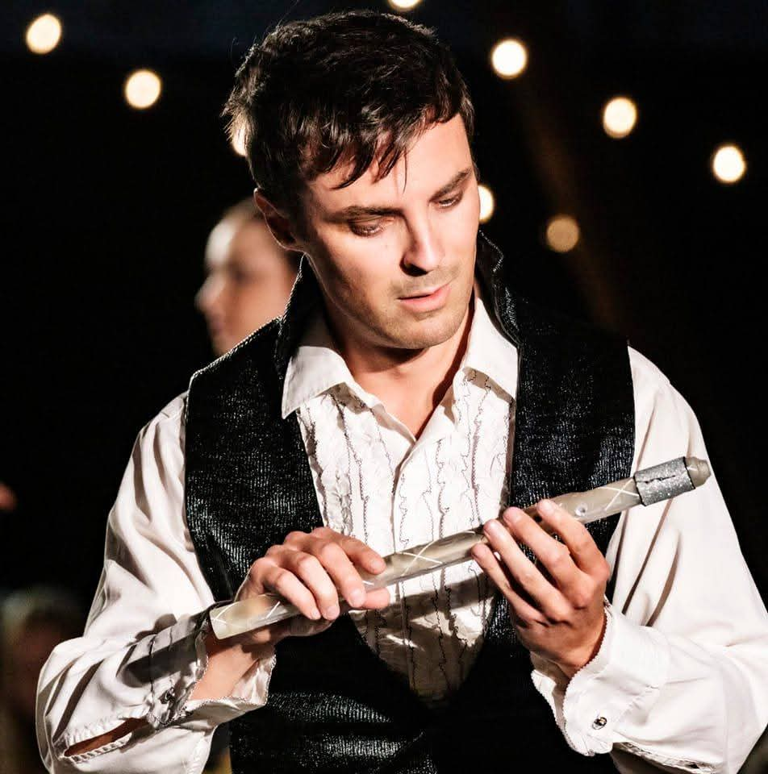
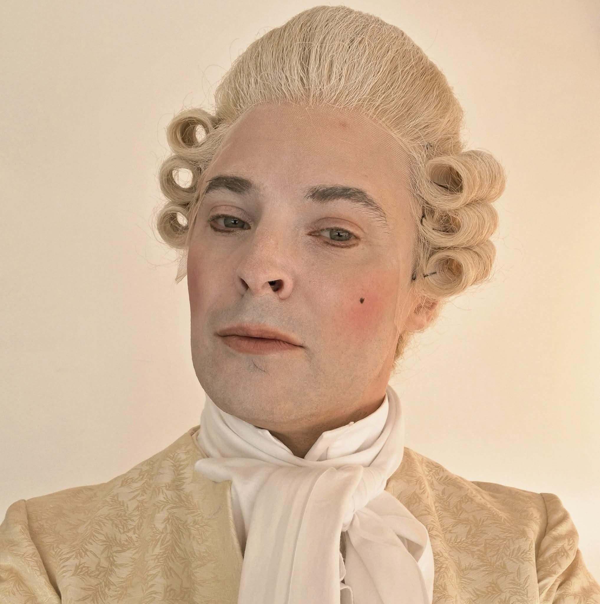
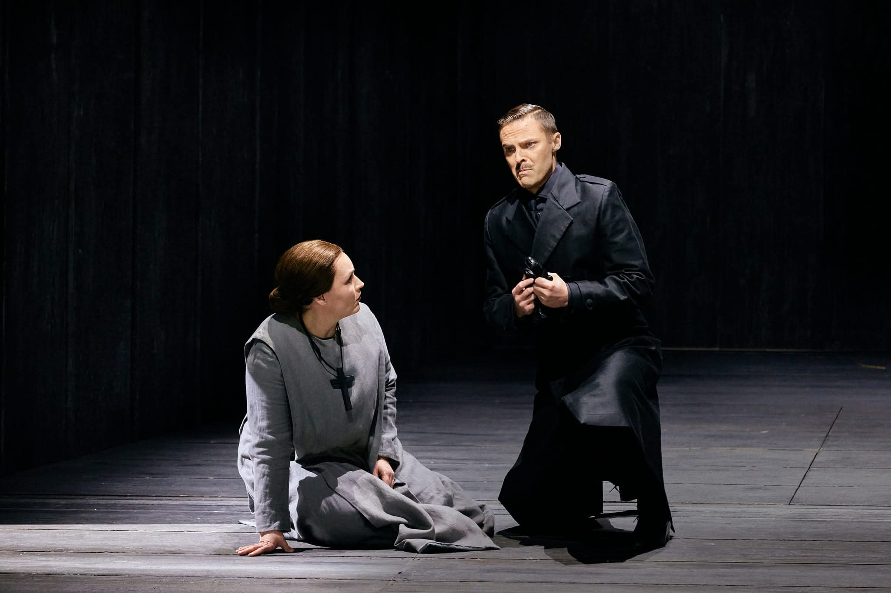

Biografia
Joel Forsström on suomenruotsalainen lyyrinen tenori, joka on saanut laulajan koulutuksensa Tukholmassa muun muassa Stockholm Operastudiossa. Hänet tunnetaan sointuvasta äänestään, lämpimästä esiintyjäpersoonastaan ja vahvasta näyttämöpresenssistään.
Opiskeltuaan laulua Mattias Danielssonin johdolla Joel debytoi solistina Suomen Kansallisoopperassa ja Savonlinnan Oopperajuhlilla kaudella 2016–2017. Sittemmin hän on esiintynyt useissa ooppera- ja musikaalituotannoissa Suomessa ja Ruotsissa.


Hänen oopperarooleihinsa kuuluvat muun muassa Tamino Mozartin Taikahuilussa, Nemorino Donizettin Lemmenjuomassa, prinssi Ramiro Rossinin Tuhkimossa sekä Monostatos Taikahuilussa. Suomen Kansallisoopperassa hän on esiintynyt muun muassa ensimmäisen komissaarin roolissa Poulencin Karmeliittasisarissa ja toisen nasarealaisen roolissa Straussin Salomessa. Kesällä 2025 Joel esitti Monostatosta Ålands Operafestivalin kriitikoiden ylistämässä Taikahuilu-tuotannossa, joka palasi ohjelmistoon kesällä 2026.
Joel on esiintynyt myös musikaaleissa, muun muassa Chessissä Helsingin Svenska Teaternissa. Lisäksi hän on toiminut solistina useissa kirkkomusiikkiteoksissa, kuten Mozartin Requiemissa, Bachin Matteus-passiossa ja Saint-Saënsin Jouluoratoriossa.

Syksystä 2022 lähtien Joel on työskennellyt Suomen Kansallisoopperassa. Tällä hetkellä hän on virkavapaalla ja vierailee muun muassa Kööpenhaminan Kuninkaallisessa oopperassa ja Malmö Operassa. Syksyllä 2026 hän esiintyi yhtenä gangstereista Malmö Operan Paul Moravecin The Shining -oopperan Euroopan kantaesityksessä. Tuotannon ohjasi Keith Warner.
Näyttämötehtäviensä lisäksi Joel esiintyy mielellään konserteissa, kirkkomusiikkitilaisuuksissa ja muissa juhlatilaisuuksissa.